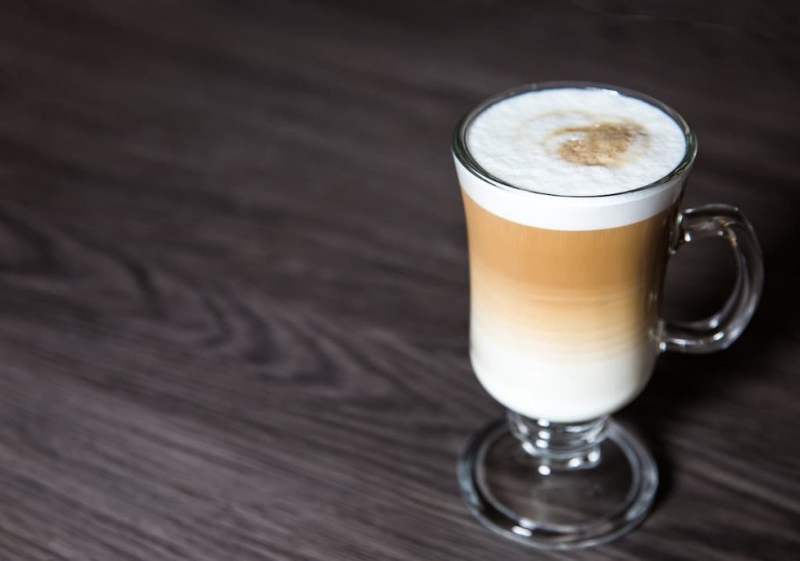

Café Ristretto
O café Ristretto é preparado com metade da água, embora a quantidade de café seja a mesma, uma moagem mais fina é usada para retardar sua extração.

Irish Coffee
Irish coffee (ou café irlandês) é uma bebida a base de café, uísque irlandês, açúcar e chantilly, ele tem uma aparêcnia semelhante ao de uma cerveja.

Café Macchiato
Cafè macchiato é uma variedade típica de café com leite italiana, consistindo em um café expresso misturado com um pouco de leite quente com espuma. O termo faz referência à mancha de leite, no caffè macchiato.

Cold Brew
O café Cold Brew é um método de infusão que não utiliza água quente para extrair as características do grão. Dessa forma, o resultado é uma bebida gelada com sabor refrescante e leve.
Café Frasppé
Café Frasppé, é um café solúvel gelado com cubos de gelo e espumado num shaker ou liquidificador, ela consiste, basicamente, na mistura do frappé com o cappuccino com chantilly por cima

Café Gelado
O café gelado é uma bebida preparada à base de café, misturado com alimento congelado. Este tipo de bebida é mais adequado nos meses de verão, mas também pode ser apreciada nos dias mais frios do inverno.

Café Affogatto
O affogato é uma sobremesa italiana feita à base de café. É servido em uma taça de gelato de baunilha acompanhado de uma dose quente de café expresso

Café Duplo
Equivale a dois shots de espresso numa xícara: aproximadamente, 60ml. Porém, também leva o dobro de pó. No preparo, o duplo corresponde a “1 café espresso + 1 café espresso”.